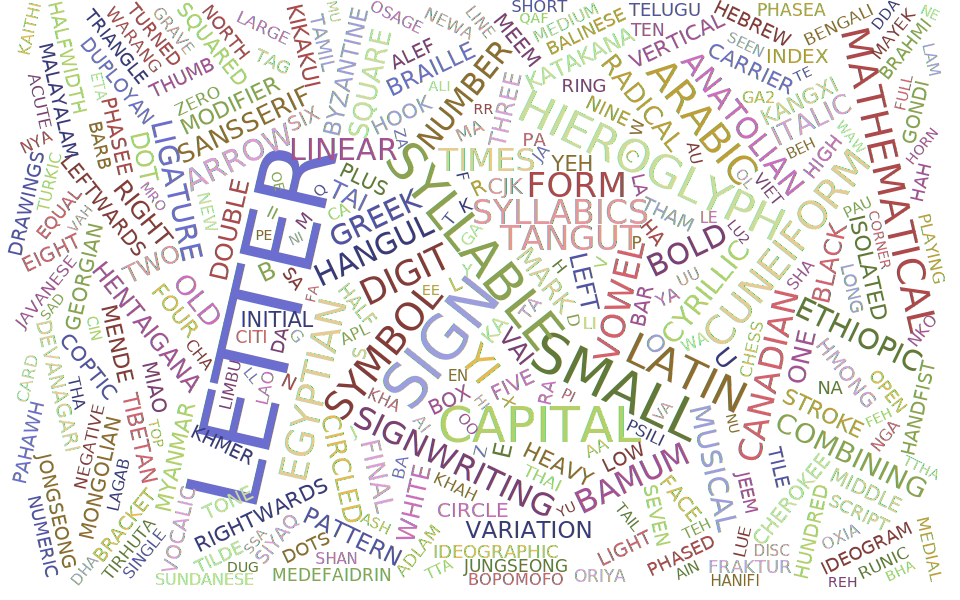

December 11, 2019
Storing Unicode: Character Name to Codepoint Mapping

Unicode Characters have a name, which makes it easier to talk about them without having to
know their codepoint.
For example, the character λ (U+03BB) is called GREEK SMALL LETTER LAMDA.
Given a character name, we want to be able to know its code point.
There are a few use cases for that, the main one being to be able to put Unicode characters
by name in string literals, a feature offered by Python, Perl
and Perl 6 Raku.
It’s also a proposed feature for C++ and this post is
an implementation experience report. And this is the function we want to implement:
constexpr char32_t cp_from_name(std::string_view) noexcept;
It seems simple enough. Alas, there are many Unicode codepoints - Currently 137,928 in Unicode 12, The challenge will be to minimize the size footprint of that function.
Analyzing the data
The Unicode Character Database is delivered as a set of hard to parse text files, that looks a bit like CSV but aren’t. Fortunately, there is also an XML document describing each character.
Feeding that to a python script, we can start to count characters, and get a better idea of the size of the data we will need:
Most of the character names are generated and can be associated with a codepoint computationally
The Unicode standard, describes two methods by which character names
are generated:
For example 木 (the Han Pictogram for tree, U+6728) is called CJK Unified Ideograph-6728, so it is easy to infer from
the name what the code point is. Arguably this makes names less useful, but it will save us a lot of space!
The other generated names are Hangul characters, which are composed of few syllables. There are over a thousand hangul characters, but only a few syllables. Hangul code points are laid out in the Unicode database in such a way that their codepoint can be computed only knowing what syllables make the character. Which is super neat. Here is an article that describes that in more detail.
With the generated names taken care of, we can deal with the ~31000 characters with a custom name. Dumping all these names in a file create 812KB of data. This is not all the information we needed because we also need to store the code points, but it gives some idea. Compressing that data with lzma gives us a 96KB file. Unicode codepoints have at most 21 bits of information, so we need something around 80KB to store the codepoints This gives us a nice lower bound of what we can hope to achieve - we know we will need at least 180KB, although it is very unlikely we will achieve that. We would like our function to have low overhead so relying on compression scheme that cannot be read by random access or that otherwise use a large amount of memory - in addition to the static data - are not considered. What the high success of the LZMA compression also tells us, is that there is a lot of repeated sequences in our data. In fact, splitting the names by spaces shows that some words are repeated a lot
Many names share common prefixes. There are 400 or so code points starting with GREEK.
Radix trees
One way to represent our data is to create a tree in which each node is a letter, and children are the next letter in each name.
This is called a Radix tree, or prefix tree. Lookup is $\mathcal{O}( size(name) )$, not great, not terrible - Unicode names are relatively short.
Each node has a label (the common prefix) and may have a value (the code point of the character), and children.
While all leaves have a value, some nodes that are not leaf also have a value: YI SYLLABLE MEX and YI SYLLABLE ME
are both character names for example.
Serialization
Now that we made sense of the data, time to lay it in memory. Each byte count. Each bit count.
How many bits do we need per node, to store the value, the name, and a way to access children nodes?
Name
Many nodes will have a single letter name, so we can use 1 byte for a 1-letter name.
But many other nodes will have a longer name
For example in Business Suit Levitating might be a node name.
We could simply store the entire name of the node but some words and subsequence are used a lot!
The word suit appears several times for example.
So instead, we can build a dictionary of all node names.
We put the largest names first, so that in Business Suit Levitating can provide in, Suit, ing etc.
There are of course repetition in the dictionary but it comes out at under 50K - critically under 65K so we
can index it with 2 bytes.
So for names longer than 1 character, we will use 3 bytes.
ASCII subset
Unicode names only use the letter A to Z, 0 to 9 and -. They are insensitive to case and spacing.
Therefore a valid character can be represented using 6 bits.
The simple way to do that is to encode a character as the index in a string such as 0123456789ABCDEFGHIJKLMNOPQRSTUVWXYZ-
We can then use a bit to discriminate between the single character case and the longer name case.
| 0 | 1 | 2 | 3 | 4 | 5 | 6 | 7 | 8 | 9 | 10 | 11 | 12 | 13 | 14 | 15 | 16 | 17 | 18 | 19 | 20 | 21 | 22 | 23 |
|---|---|---|---|---|---|---|---|---|---|---|---|---|---|---|---|---|---|---|---|---|---|---|---|
| Has long name | Letter | ||||||||||||||||||||||
| Name Size | Index | ||||||||||||||||||||||
Using this scheme, the name of a single node is limited to 32 ($2 ^6 $), but that is not an issue as very long names can simply be split into multiple nodes.
Codepoint
Many nodes, including all leaf nodes, have a value, which is the code points. But some nodes do not have a value at all and we should avoid encoding wasting a byte for something null as that immediately many kilobytes wasted. Fortunately, we still have a free bit available!
| 0 | 1 | 2 | 3 | 4 | 5 | 6 | 7 | 8 | 9 | 10 | 11 | 12 | 13 | 14 | 15 | 16 | 17 | 18 | 19 | 20 | 21 | 22 | 23 |
|---|---|---|---|---|---|---|---|---|---|---|---|---|---|---|---|---|---|---|---|---|---|---|---|
| Has long name | Has value | Letter | |||||||||||||||||||||
| Name Size | Index | ||||||||||||||||||||||
Unicode uses 21 bits per code point. leaving us with 3 bits. Exciting. The 21 bits size of Unicode codepoints is something that can be exploited with many other Unicode properties:
| 24-44 | 45 | 46 | 47 |
|---|---|---|---|
| Value |
We could encode the value as a variable int (using 2 or 3 bytes) depending on the value of the code point, using one of the free bit as discriminant - would probably save about 8K. It makes it a bit harder to serialize, so it’s not something I have implemented yet.
Children
We need a way for a node to indicate where the child nodes are. Despite my best effort, we will need 3 bytes for that, but we can make it more palatable. Most nodes with a value do not have children. So we can use one of our 3 free bits (that’s luxury), to indicate whether we have some children or not:
| 24-44 | 45 | 46 | 47 |
|---|---|---|---|
| Value | Has children |
If the node does not have a value, we know it has at least one child, which means our “has value” bit actually stores 2 bits of information. Nice :D
Knowing we have children still require a way to jump to them. I originally add a list of offset to jump to but that was incredibly wasteful. It took me a while but I realized I could store the offset of the first children and lay all the direct children of a given parent sequentially.
Taking the example of the radix tree with the digits, we can lay it memory in breadth-first order:
DIGIT | ZERO | ONE | T | F | S | EIGHT | NINE | WO | HREE | OUR | IVE | IX | EVEN
And then we only need to store in the data for DIGIT the offset of the node ZERO.
The last thing we need is a termination condition after the first children of a given node. Fortunately, we have a few bits left - we used 24 bits for the offset - where 19 would suffice given our serialized radix is about 200KB. We also have 2 bits left next to the value:
| 24-44 | 45 | 46 | 47 |
|---|---|---|---|
| Value | Has sibling | Has children |
Result and future Improvements
In my current WIP implementation, for the entire Unicode 12 database, (including aliases) the dictionary is 48.6KB and the radix tree is 213Ki. which is about 8 bytes per non-generated name! This can be confirmed using a tool such as Bloaty McBloatface - I am not making this up!
It is possible to reduce the data further. For example, the dictionary can be shrunk by 25% using the fact that the letters making the characters name can be encoded using only 6 bits.
Code point to name
I might explore that in a further article, but the codepoint to name mapping requires different tricks and data structures. Even if it is technically possible to scan the entire radix tree to reconstruct a name it is inefficient, and more critically we do not keep track of the types of names (there are names and aliases).
A popular solution used by python and rust is to store only the Code point to name mapping and then use perfect hashing to get from a name to a code point, convert it back and check the result. It is a useful solution when one needs both mappings.
There might be other improvements possible or clever way to do that.
You can play with the code on Compiler Explorer.
Compressing Unicode data is a very fun challenge, consider giving it a trie!
Share on